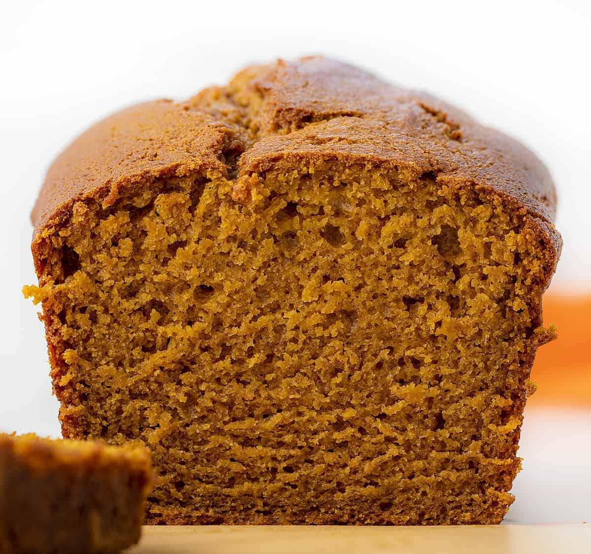

Pumpkin Bread

The best, most moist, pumpkin bread ever!
Seriously, the title says it all! This is the best pumpkin bread recipe we've ever found. It's now a family favorite all year round (not just in the Fall)! A slice served warm or cold pairs perfectly with a cup of coffee.
The best part? It's pretty darn easy to make!
Ingredients:
- 1 3/4 cups all-purpose flour
- 1/4 teaspoon baking powder
- 1 teaspoon baking soda
- 1/2 teaspoon salt
- 1/2 teaspoon ground cinnamon
- 1/2 teaspoon ground nutmeg
- 1/4 teaspoon ground ginger
- 1/4teaspoon ground cloves
- 1 1/2 cups granulated sugar
- 1/2 cup vegetable oil
- 1 large eggs, room temperature
- 1 teaspoon vanilla extract
- 1 tablespoon molasses
- 1 can (15 ounces) pure pumpkin (aka pumpkin puree, not pumpkin pie filling)
- 1/3 cup orange juice
Instructions:
- Preheat oven to 350°F.
- While oven is heating, spray a 9x5-inch loaf pan with cooking spray or line with parchment paper.
- In a medium bowl, add flour, baking powder, baking soda, salt, cinnamon, nutmeg, ginger, and cloves. Combine with a whisk and set aside.
- In a large bowl, combine the sugar, oil, eggs, vanilla, molasses, pumpkin puree, and orange juice with a hand mixer on medium-low.
- Add the dry ingredients to the wet ingredient. Mix on low to medium-low just until the ingredients are combined.
- Pour batter into the loaf pan and bake for 80 minutes, or until a toothpick comes out with crumbs, but no wet batter. Let cool and serve.